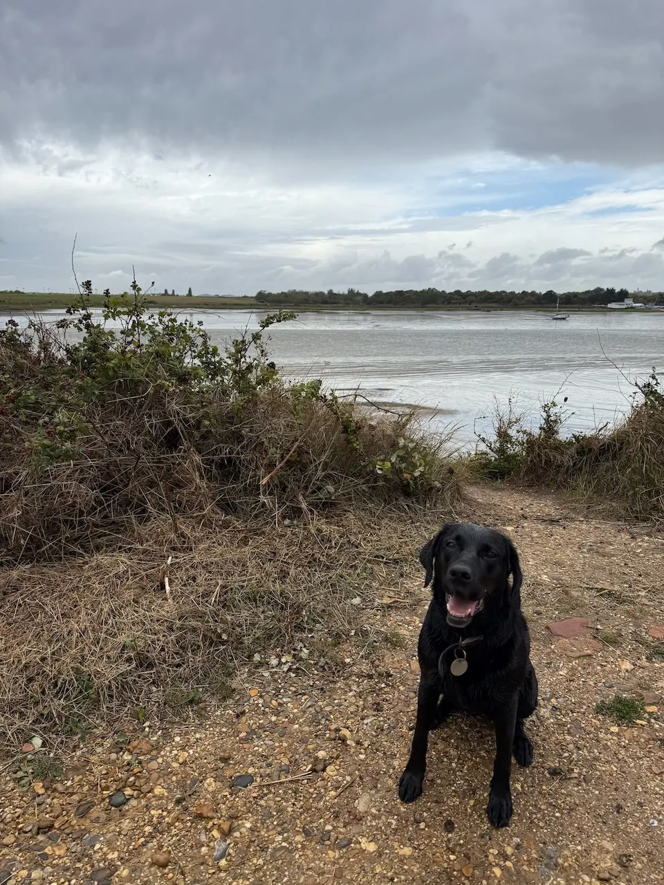

Heybridge Basin Circular
Circular
Best car park: Daisy Meadow Car Park
One of Essex's most popular waterside walks, Heybridge Basin combines peaceful canal paths, estuary views and historic lock gates with several excellent dog-friendly cafés and pubs. It's an easy, mostly flat walk that's suitable for all ages and ideal for a relaxed morning or afternoon with your dog.
Local tip: Arrive early on sunny weekends to make parking easier and enjoy a quieter walk. If the tide is in, the estuary views are particularly beautiful.
Honest ratings, so you can decide in seconds whether it suits your dog.
How we rate this
How we rate this
How we rate this
How we rate this
How we rate this
How we rate this
How we rate this
How we rate this
See what it actually looks like before you go.


Circular
Best car park: Daisy Meadow Car Park
Out and back
Best car park: Osea Leisure Park Car Park
Out and back
Best car park: Osea Leisure Park Car Park
Paid; large car park.
Free if you go to The Old Ship; only for customers.
Free if you go to The Jolly Sailor; only for customers.
Free if you go to Osea View cafe; paid option available.
Click a car park above to open it in Google Maps
Already heading to Heybridge? These are the best nearby dog-friendly places to visit before or after your walk.
A dog-friendly pub at Heybridge Basin with estuary views, a seafood bar and plenty of outdoor space to relax after a walk.
A family-friendly quayside pub serving freshly cooked food and real ales, with a large waterside patio overlooking the Blackwater Estuary.
A dog-friendly coastal café with stunning estuary views, all-day breakfasts and a menu celebrating local, seasonal ingredients.
They are a Farm Cafe dedicated to serving Michelin-style dishes crafted with the best local produce they can source. Whether you're joining them for a leisurely brunch, tea and cake or a casual dinner, they promise to deliver something delicious.
A charming tea room serving hearty breakfasts, homemade lunches and signature afternoon teas, with beautifully themed rooms and a dog-friendly courtyard.
A dog-friendly café at Tom's Farm Shop serving traditional breakfasts, homemade cakes and its speciality smoked menu.
A traditional country pub overlooking Little Braxted village green, serving homemade pub classics with a large beer garden and cosy log fires.
Traditional country pub with a large garden, classic pub food and popular Sunday roasts.
A traditional tea room set within the historic Wilkin & Sons jam factory, serving hearty breakfasts, classic lunches, cream teas and homemade favourites alongside the story of Tiptree's famous jam-making heritage.
Other dog-friendly walks within easy reach of Heybridge Basin.
From local dog owners who've walked it.
★ This walk doesn't have any community tips yet.
Know something that would help another dog owner?
We'd love your help keeping Dogs of Essex accurate and up to date.